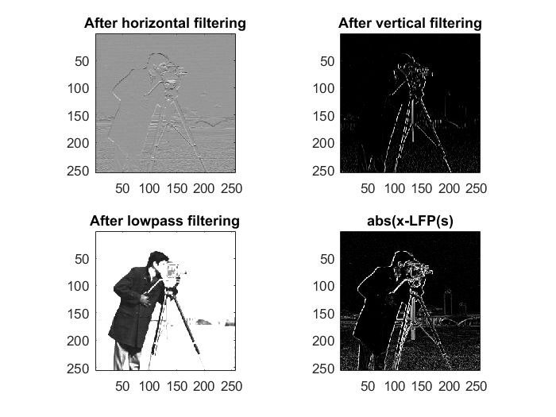

Matt Bachmeier
Lab 8 Image processing and compression 4/30/2017
Contents
- 3.1 Image analysis using 2D DFT
- 3.2 Image filtering
- 3.3 Image filter using the DFT
- 4.1 Image restoration
- 4.1a generate blurred image
- 4.1b deblurring using inverse filtering
- 4.1c deblurring in frequency domain
- 4.1d deblurring in frequency domain (improved)
- 4.1e deblurring noisy blurred image
- 4.2a extract the LSB bit plane of an image
- 4.3a 2D DCT
- 4.3b Block DCT transform
- 4.3c applying quantization
- 4.4d decompression
3.1 Image analysis using 2D DFT
clear all close all load cameraman.mat figure(1) imagesc(x) colormap(gray) axis('square') figure(2) spec_x = fft2(x); imagesc(fftshift(log10(abs(spec_x)))); colormap(gray) axis('square') % <= enter matlab code here
3.2 Image filtering
% you should turn in 4 figures. the first one will use the title 'after % horizontal filtering' the second with title 'after vertical filtering'. % The third one with title 'after lowpass filtering' The fourth one with % title 'abs(x-LPF(x))' h_h = [1/4 1/4; -1/4 -1/4]; h_v = [1/4 -1/4; 1/4 -1/4]; h_lp = [1/4 1/4; 1/4 1/4]; y_h = conv2(x, h_h, 'same'); figure, subplot(2,2,1), imagesc(y_h); colormap('gray'); axis square title('After horizontal filtering'); y_v = conv2(x, h_v, 'same'); subplot(2,2,2), image(y_v); colormap('gray'); axis square title('After vertical filtering'); y_lp = conv2(x, h_lp, 'same'); subplot(2,2,3), image(y_lp); colormap('gray'); axis square title('After lowpass filtering'); diff1 = abs(x-y_lp); subplot(2,2,4), image(diff1); colormap('gray'); axis square title('abs(x-LFP(s)'); % <= enter matlab code here
3.3 Image filter using the DFT
you should submit 1 figure with title 'abs(x-LPT(x)) via DFT'
fftx = fft2(x); fft_hlp = fft2(h_lp, 256,256); filtered_image = fftx.*fft_hlp; LPT_DFT = ifft2(filtered_image); diff2 = abs(LPT_DFT - x); figure, imagesc(diff2); colormap(gray); axis square title('abs(x-LPT(x)) via DFT'); % <= enter matlab code here
4.1 Image restoration
% load blur.mat and display it with title 'original image' load blur.mat figure, imagesc(h); colormap('gray'); axis square title('original image'); % <= enter matlab code here
4.1a generate blurred image
% display the blurred image with title 'blurred image' load nimes_france.mat blurred_image = conv2(x,h,'same'); figure, imagesc(blurred_image); colormap('gray'); axis square title('blurred image'); % <= enter matlab code here
4.1b deblurring using inverse filtering
% remember to use 'same' in conv2 to ensure the image afater convolution % has the same size. % submit 1 figure with title 'after deblurring with invh' load blurinv.mat tic deblurred_image = conv2(blurred_image, invh, 'same'); toc figure, imagesc(deblurred_image); colormap('gray'); axis square title('after deblurring with invh'); % <= enter matlab code here
Elapsed time is 0.039609 seconds.
4.1c deblurring in frequency domain
% the division is performed element by element using ./ operator. % denote the recovered image Xrecovery % submit 1 figure with title 'after deblurring in frequency domain' % print elapse time and compare it against that in 4.1b (longer? shorter?) tic fft_blurred = fft2(blurred_image); fft_blurring = fft2(h, 512, 512); deblurred_DFT = fft_blurred./fft_blurring; Xrecovery = ifft2(deblurred_DFT); toc figure, imagesc(Xrecovery); colormap('gray'); axis square title('after deblurring in frequency domain'); % <= enter matlab code here
Elapsed time is 0.030502 seconds.
4.1d deblurring in frequency domain (improved)
% submit 1 figure with title 'after deblurring in frequency domain and % shifting' % Image name to be used: Xrecovery1 N = 512; shift = exp(-j*2*pi*21/N*(0:N-1)')*exp(-j*2*pi*21/N*(0:N-1)); Xrecovery1 = real(ifft2(fft2(Xrecovery).*shift)); figure, imagesc(Xrecovery1); colormap('gray'); axis square title('after deblurring in frequency domain and shifting'); % <= enter matlab code here
4.1e deblurring noisy blurred image
% generate the blurred image plus noise as instructed in the handout. % part I. apply deblurring method in 4.1d. submit the result with title % 'deblurring in frequency domain with noise' % Also comment on the result. % <= enter matlab code here % Part II. repeat part I but with suggested improvement in handout. submit % the result with title 'deblurring in frequency domain with noise % (modified)' % <= enter matlab code here
4.2a extract the LSB bit plane of an image
% load cam_wm.mat in which an image called y. % to extract least significant bit, note that each pixel is an integer with % value between 0 to 255 (2^8 -1). The LSB determines if the value is an % odd number (LSB = 1) or an even number (LSB=0). % if y is an even number, then y - 2*floor(y/2) = 0 where floor(x) is the % largest integer smaller than x. If y is an odd number, y-2*floor(y/2) = 1 % to check, if y = 4, 4-2*floor(4/2)=0. If y = 5, 5-2*floor(5/2) = 5-2*2 = % 1. Use this method you can find the LSB for each pixel of the image. the % matrix of the LSB value form a binary image (contains 0 or 1). % submit 1 figure of the LSB image with title 'the water mark at the LSB' % <= enter matlab code here
4.3a 2D DCT
display DCT basis. follow the instruction in the handout. Watch out for the quotation marks for text strings. submit 1 figure title '2D DCT Basis function'
% <= enter matlab code here
4.3b Block DCT transform
submit two subplots, subplot(1,2,1) title 'original image' subplot(1,2,2), title 'magnitude of DCT coefficients'
% <= enter matlab code here
4.3c applying quantization
remember the quantization may be applied to each element in the DCT coefficient matrix. print out compression ratio
% <= enter matlab code here
4.4d decompression
IDCT needs to be applied block by block submit 1 figure title ('decompressed image')
% <= enter matlab code here